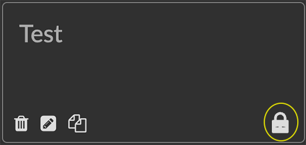
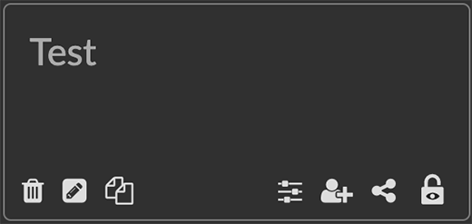
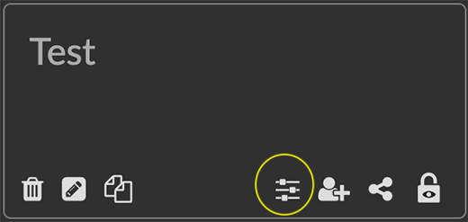
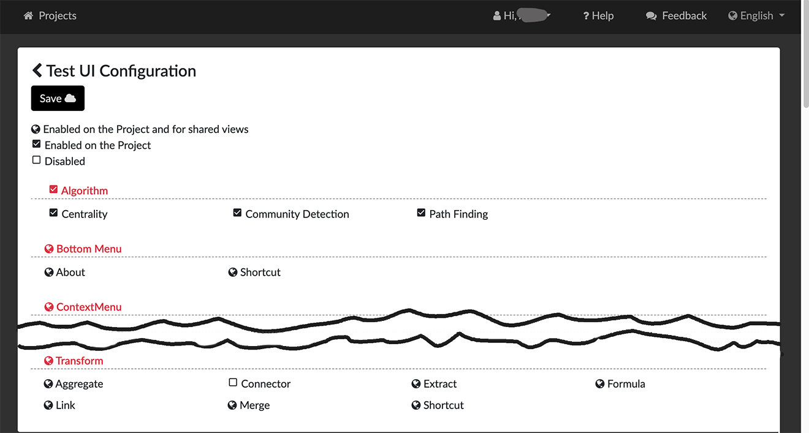
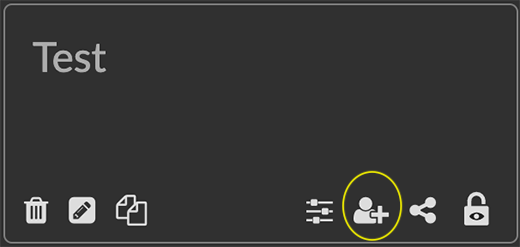
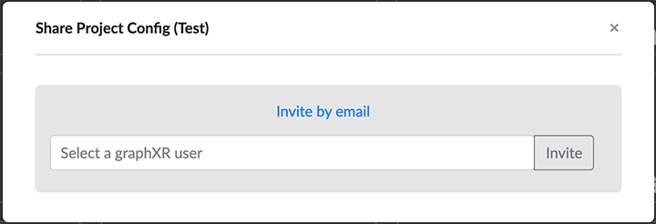
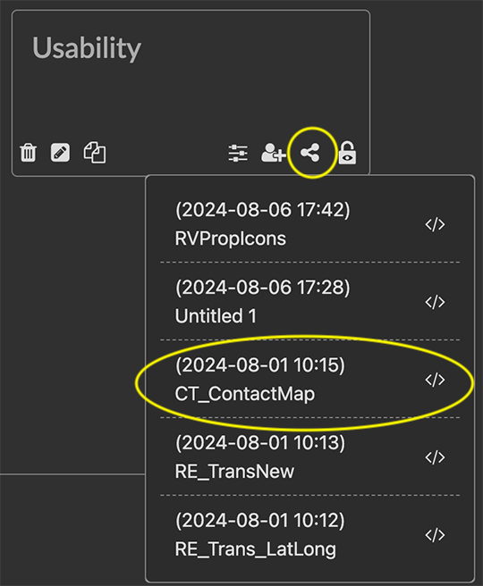
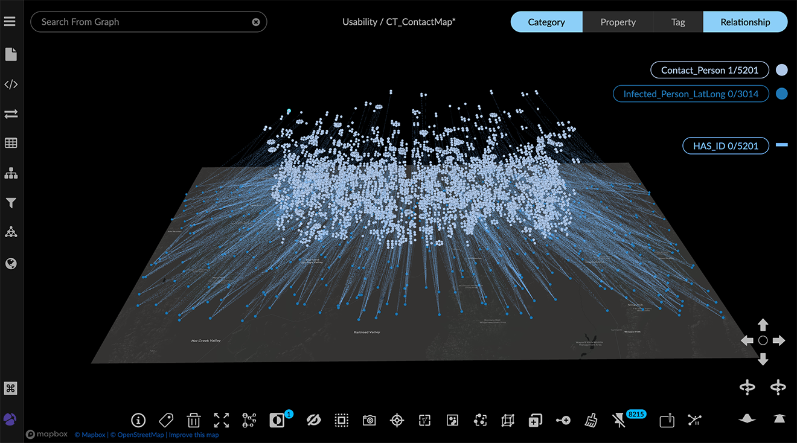

Sharing Project Views You can share any project with other GraphXR users. Once shared, its data views are available to the invited users. Granting Shared Access to a Project Projects are not shared by default. You must explicitly grant shared access, and set a sharing configuration that sets the navigation and editing capabilities that will be available to sharing users. To share a project and its data views: Go to the Projects (Home) page, locate the project you want to share, and click its Enable Share icon (the lock icon at the lower right of the project label).  The lock icon changes to DisableShare, and additional GoToShare, Invite, and ShareUIConfig icons appear.  Click the project’s ShareUI Config icon to display the dialog to review the project’s sharing configuration.  By default, all user interface functions are enabled.  Click the icon next to the functions you want removed for share users. This cycles through the following options: Enabled on the project and for shared users. Enabled on the Project Disabled Click Save, or click the arrow icon at the upper left to exit the dialog without making changes. Now click the projects’s Invite icon to send an email invitation to another GraphXR user.  Select or enter a GraphXR user, and click Invite.  When the recipient accepts the invitation, the project appears in the Shared Projects area on their Projects page. Accessing a Shared Project or View After you are invited to share a project, the project tile appears on your Projects page in the Shared Projects area. Your ability to navigate or edit the view is determined by the project’s sharing configuration. You can simply enter the project and go to the Views tab to see all the project’s data views. Alternatively, in the Projects page you can select an individual view from the project’s Share menu. This automatically opens the project and loads the view. Loading a Shared View When you already know the view you want to work with, you can select it in the Projects page. To load a shared project view: In the Projects (Home) page, locate the project in the Shared Projects area. Click the project’s Share icon to display a menu of the views saved in that project.  Select a view from the menu. The project automatically opens with the selected view loaded.  Entering a Shared Project You can enter a shared project without loading a view first. Once in the project, you can load a view from the list in the Views tab. To enter a shared project without loading a view: In the Projects (Home) page, locate the project in the Shared Projects area. Click the project tile to enter the project. Go to the Project panel and Views tab, locate a saved view, and click the view’s thumbnail tile or list item.